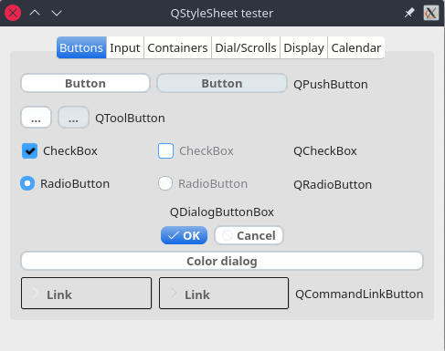

About the project

- QMainWindow {
- background-color:#ececec;
- }
- QPushButton, QToolButton, QCommandLinkButton{
- padding: 0 5px 0 5px;
- border-style: solid;
- border-top-color: qlineargradient(spread:pad, x1:0, y1:0, x2:0, y2:1, stop:0 #c1c9cf, stop:1 #d2d8dd);
- border-right-color: qlineargradient(spread:pad, x1:1, y1:0, x2:0, y2:0, stop:0 #c1c9cf, stop:1 #d2d8dd);
- border-bottom-color: qlineargradient(spread:pad, x1:0, y1:1, x2:0, y2:0, stop:0 #c1c9cf, stop:1 #d2d8dd);
- border-left-color: qlineargradient(spread:pad, x1:0, y1:0, x2:1, y2:0, stop:0 #c1c9cf, stop:1 #d2d8dd);
- border-width: 2px;
- border-radius: 8px;
- color: #616161;
- font-weight: bold;
- background-color: qlineargradient(spread:pad, x1:0.5, y1:0, x2:0.5, y2:1, stop:0 #fbfdfd, stop:0.5 #ffffff, stop:1 #fbfdfd);
- }
- QPushButton::default, QToolButton::default, QCommandLinkButton::default{
- border: 2px solid transparent;
- color: #FFFFFF;
- background-color: qlineargradient(spread:pad, x1:0.5, y1:0, x2:0.5, y2:1, stop:0 #84afe5, stop:1 #1168e4);
- }
- QPushButton:hover, QToolButton:hover, QCommandLinkButton:hover{
- color: #3d3d3d;
- }
- QPushButton:pressed, QToolButton:pressed, QCommandLinkButton:pressed{
- color: #aeaeae;
- background-color: qlineargradient(spread:pad, x1:0.5, y1:0, x2:0.5, y2:1, stop:0 #ffffff, stop:0.5 #fbfdfd, stop:1 #ffffff);
- }
- QPushButton:disabled, QToolButton:disabled, QCommandLinkButton:disabled{
- color: #616161;
- background-color: qlineargradient(spread:pad, x1:0.5, y1:0, x2:0.5, y2:1, stop:0 #dce7eb, stop:0.5 #e0e8eb, stop:1 #dee7ec);
- }
- QLineEdit, QTextEdit, QPlainTextEdit, QSpinBox, QDoubleSpinBox, QTimeEdit, QDateEdit, QDateTimeEdit {
- border-width: 2px;
- border-radius: 8px;
- border-style: solid;
- border-top-color: qlineargradient(spread:pad, x1:0.5, y1:1, x2:0.5, y2:0, stop:0 #c1c9cf, stop:1 #d2d8dd);
- border-right-color: qlineargradient(spread:pad, x1:0, y1:0, x2:1, y2:0, stop:0 #c1c9cf, stop:1 #d2d8dd);
- border-bottom-color: qlineargradient(spread:pad, x1:0.5, y1:0, x2:0.5, y2:1, stop:0 #c1c9cf, stop:1 #d2d8dd);
- border-left-color: qlineargradient(spread:pad, x1:1, y1:0, x2:0, y2:0, stop:0 #c1c9cf, stop:1 #d2d8dd);
- background-color: #f4f4f4;
- color: #3d3d3d;
- }
- QLineEdit:focus, QTextEdit:focus, QPlainTextEdit:focus, QSpinBox:focus, QDoubleSpinBox:focus, QTimeEdit:focus, QDateEdit:focus, QDateTimeEdit:focus {
- border-width: 2px;
- border-radius: 8px;
- border-style: solid;
- border-top-color: qlineargradient(spread:pad, x1:0.5, y1:1, x2:0.5, y2:0, stop:0 #85b7e3, stop:1 #9ec1db);
- border-right-color: qlineargradient(spread:pad, x1:0, y1:0, x2:1, y2:0, stop:0 #85b7e3, stop:1 #9ec1db);
- border-bottom-color: qlineargradient(spread:pad, x1:0.5, y1:0, x2:0.5, y2:1, stop:0 #85b7e3, stop:1 #9ec1db);
- border-left-color: qlineargradient(spread:pad, x1:1, y1:0, x2:0, y2:0, stop:0 #85b7e3, stop:1 #9ec1db);
- background-color: #f4f4f4;
- color: #3d3d3d;
- }
- QLineEdit:disabled, QTextEdit:disabled, QPlainTextEdit:disabled, QSpinBox:disabled, QDoubleSpinBox:disabled, QTimeEdit:disabled, QDateEdit:disabled, QDateTimeEdit:disabled {
- color: #b9b9b9;
- }
- QSpinBox::up-button, QDoubleSpinBox::up-button, QTimeEdit::up-button, QDateEdit::up-button, QDateTimeEdit::up-button {
- subcontrol-origin: padding;
- subcontrol-position: top right;
- width: 15px;
- color: #272727;
- border-left-width: 1px;
- border-left-color: darkgray;
- border-left-style: solid;
- border-top-right-radius: 3px;
- padding: 3px;
- }
- QSpinBox::down-button, QDoubleSpinBox::down-button, QTimeEdit::down-button, QDateEdit::down-button, QDateTimeEdit::down-button {
- subcontrol-origin: padding;
- subcontrol-position: bottom right;
- width: 15px;
- color: #272727;
- border-left-width: 1px;
- border-left-color: darkgray;
- border-left-style: solid;
- border-bottom-right-radius: 3px;
- padding: 3px;
- }
- QSpinBox::up-button:pressed, QDoubleSpinBox::up-button:pressed, QTimeEdit::up-button:pressed, QDateEdit::up-button:pressed, QDateTimeEdit::up-button:pressed {
- color: #aeaeae;
- background-color: qlineargradient(spread:pad, x1:0.5, y1:0, x2:0.5, y2:1, stop:0 #ffffff, stop:0.5 #fbfdfd, stop:1 #ffffff);
- }
- QSpinBox::down-button:pressed, QDoubleSpinBox::down-button:pressed, QTimeEdit::down-button:pressed, QDateEdit::down-button:pressed, QDateTimeEdit::down-button:pressed {
- color: #aeaeae;
- background-color: qlineargradient(spread:pad, x1:0.5, y1:0, x2:0.5, y2:1, stop:0 #ffffff, stop:0.5 #fbfdfd, stop:1 #ffffff);
- }
- QSpinBox::up-button:hover, QDoubleSpinBox::up-button:hover, QTimeEdit::up-button:hover, QDateEdit::up-button:hover, QDateTimeEdit::up-button:hover {
- color: #FFFFFF;
- border-top-right-radius: 5px;
- background-color: qlineargradient(spread:pad, x1:0.5, y1:0, x2:0.5, y2:1, stop:0 #84afe5, stop:1 #1168e4);
- }
- QSpinBox::down-button:hover, QDoubleSpinBox::down-button:hover, QTimeEdit::down-button:hover, QDateEdit::down-button:hover, QDateTimeEdit::down-button:hover {
- color: #FFFFFF;
- border-bottom-right-radius: 5px;
- background-color: qlineargradient(spread:pad, x1:0.5, y1:0, x2:0.5, y2:1, stop:0 #84afe5, stop:1 #1168e4);
- }
- QSpinBox::up-arrow, QDoubleSpinBox::up-arrow, QTimeEdit::up-arrow, QDateEdit::up-arrow, QDateTimeEdit::up-arrow {
- image: url(/usr/share/icons/Adwaita/16x16/actions/go-up-symbolic.symbolic.png);
- }
- QSpinBox::down-arrow, QDoubleSpinBox::down-arrow, QTimeEdit::down-arrow, QDateEdit::down-arrow, QDateTimeEdit::down-arrow {
- image: url(/usr/share/icons/Adwaita/16x16/actions/go-down-symbolic.symbolic.png);
- }
- QProgressBar {
- max-height: 8px;
- text-align: center;
- font: italic bold 11px;
- color: #3d3d3d;
- border: 1px solid transparent;
- border-radius:4px;
- background-color: qlineargradient(spread:pad, x1:0, y1:0, x2:0, y2:1, stop:0 #ddd5d5, stop:0.5 #dad3d3, stop:1 #ddd5d5);
- }
- QProgressBar::chunk {
- background-color: qlineargradient(spread:pad, x1:0, y1:0, x2:0, y2:1, stop:0 #467dd1, stop:0.5 #3b88fc, stop:1 #467dd1);
- border-radius: 4px;
- }
- QProgressBar:disabled {
- color: #616161;
- }
- QProgressBar::chunk:disabled {
- background-color: #aeaeae;
- }
- QSlider::groove {
- border: 1px solid #bbbbbb;
- background-color: #52595d;
- border-radius: 4px;
- }
- QSlider::groove:horizontal {
- height: 6px;
- }
- QSlider::groove:vertical {
- width: 6px;
- }
- QSlider::handle:horizontal {
- background: #ffffff;
- border-style: solid;
- border-width: 1px;
- border-color: rgb(207,207,207);
- width: 12px;
- margin: -5px 0;
- border-radius: 7px;
- }
- QSlider::handle:vertical {
- background: #ffffff;
- border-style: solid;
- border-width: 1px;
- border-color: rgb(207,207,207);
- height: 12px;
- margin: 0 -5px;
- border-radius: 7px;
- }
- QSlider::add-page, QSlider::sub-page {
- border: 1px transparent;
- background-color: #52595d;
- border-radius: 4px;
- }
- QSlider::add-page:horizontal {
- background: qlineargradient(spread:pad, x1:0, y1:0, x2:0, y2:1, stop:0 #ddd5d5, stop:0.5 #dad3d3, stop:1 #ddd5d5);
- }
- QSlider::sub-page:horizontal {
- background-color: qlineargradient(spread:pad, x1:0, y1:0, x2:1, y2:0, stop:0 #467dd1, stop:0.5 #3b88fc, stop:1 #467dd1);
- }
- QSlider::add-page:vertical {
- background-color: qlineargradient(spread:pad, x1:0, y1:0, x2:0, y2:1, stop:0 #467dd1, stop:0.5 #3b88fc, stop:1 #467dd1);
- }
- QSlider::sub-page:vertical {
- background: qlineargradient(spread:pad, x1:0, y1:0, x2:1, y2:0, stop:0 #ddd5d5, stop:0.5 #dad3d3, stop:1 #ddd5d5);
- }
- QSlider::add-page:horizontal:disabled, QSlider::sub-page:horizontal:disabled, QSlider::add-page:vertical:disabled, QSlider::sub-page:vertical:disabled {
- background: #b9b9b9;
- }
- QComboBox, QFontComboBox {
- border-width: 2px;
- border-radius: 8px;
- border-style: solid;
- border-top-color: qlineargradient(spread:pad, x1:0.5, y1:1, x2:0.5, y2:0, stop:0 #c1c9cf, stop:1 #d2d8dd);
- border-right-color: qlineargradient(spread:pad, x1:0, y1:0, x2:1, y2:0, stop:0 #c1c9cf, stop:1 #d2d8dd);
- border-bottom-color: qlineargradient(spread:pad, x1:0.5, y1:0, x2:0.5, y2:1, stop:0 #c1c9cf, stop:1 #d2d8dd);
- border-left-color: qlineargradient(spread:pad, x1:1, y1:0, x2:0, y2:0, stop:0 #c1c9cf, stop:1 #d2d8dd);
- background-color: #f4f4f4;
- color: #272727;
- padding-left: 5px;
- }
- QComboBox:editable, QComboBox:!editable, QComboBox::drop-down:editable, QComboBox:!editable:on, QComboBox::drop-down:editable:on {
- background: #ffffff;
- }
- QComboBox::drop-down {
- subcontrol-origin: padding;
- subcontrol-position: top right;
- width: 15px;
- color: #272727;
- border-left-width: 1px;
- border-left-color: darkgray;
- border-left-style: solid;
- border-top-right-radius: 3px;
- border-bottom-right-radius: 3px;
- }
- QComboBox::down-arrow {
- image: url(/usr/share/icons/Adwaita/16x16/actions/go-down-symbolic.symbolic.png); /*Adawaita icon thene*/
- }
- QComboBox::down-arrow:on {
- top: 1px;
- left: 1px;
- }
- QComboBox QAbstractItemView {
- border: 1px solid darkgray;
- border-radius: 8px;
- selection-background-color: #dadada;
- selection-color: #272727;
- color: #272727;
- background: white;
- }
- QLabel, QCheckBox, QRadioButton {
- color: #272727;
- }
- QCheckBox {
- padding: 2px;
- }
- QCheckBox:disabled, QRadioButton:disabled {
- color: #808086;
- padding: 2px;
- }
- QCheckBox:hover {
- border-radius:4px;
- border-style:solid;
- padding-left: 1px;
- padding-right: 1px;
- padding-bottom: 1px;
- padding-top: 1px;
- border-width:1px;
- border-color: transparent;
- }
- QCheckBox::indicator:checked {
- image: url(/usr/share/icons/Adwaita/16x16/actions/object-select-symbolic.symbolic.png);
- height: 15px;
- width: 15px;
- border-style:solid;
- border-width: 1px;
- border-color: #48a5fd;
- color: #ffffff;
- border-radius: 3px;
- background-color: qlineargradient(spread:pad, x1:0, y1:0, x2:0, y2:1, stop:0 #48a5fd, stop:0.5 #329cfb, stop:1 #48a5fd);
- }
- QCheckBox::indicator:unchecked {
- height: 15px;
- width: 15px;
- border-style:solid;
- border-width: 1px;
- border-color: #48a5fd;
- border-radius: 3px;
- background-color: #fbfdfa;
- }
- QLCDNumber {
- color: #616161;;
- }
- QMenuBar {
- background-color: #ececec;
- }
- QMenuBar::item {
- color: #616161;
- spacing: 3px;
- padding: 1px 4px;
- background-color: #ececec;
- }
- QMenuBar::item:selected {
- background-color: #dadada;
- color: #3d3d3d;
- }
- QMenu {
- background-color: #ececec;
- }
- QMenu::item:selected {
- background-color: #dadada;
- color: #3d3d3d;
- }
- QMenu::item {
- color: #616161;;
- background-color: #e0e0e0;
- }
- QTabWidget {
- color:rgb(0,0,0);
- background-color:#000000;
- }
- QTabWidget::pane {
- border-color: #050a0e;
- background-color: #e0e0e0;
- border-width: 1px;
- border-radius: 4px;
- position: absolute;
- top: -0.5em;
- padding-top: 0.5em;
- }
- QTabWidget::tab-bar {
- alignment: center;
- }
- QTabBar::tab {
- border-bottom: 1px solid #c0c0c0;
- padding: 3px;
- color: #272727;
- background-color: #fefefc;
- margin-left:0px;
- }
- QTabBar::tab:!last {
- border-right: 1px solid;
- border-right-color: #c0c0c0;
- border-bottom-color: #c0c0c0;
- }
- QTabBar::tab:first {
- border-top-left-radius: 4px;
- border-bottom-left-radius: 4px;
- }
- QTabBar::tab:last {
- border-top-right-radius: 4px;
- border-bottom-right-radius: 4px;
- }
- QTabBar::tab:selected, QTabBar::tab:last:selected, QTabBar::tab:hover {
- color: #FFFFFF;
- background-color: qlineargradient(spread:pad, x1:0.5, y1:0, x2:0.5, y2:1, stop:0 #84afe5, stop:1 #1168e4);
- }
- QRadioButton::indicator {
- height: 14px;
- width: 14px;
- border-style:solid;
- border-radius:7px;
- border-width: 1px;
- }
- QRadioButton::indicator:checked {
- border-color: #48a5fd;
- background-color: qradialgradient(cx:0.5, cy:0.5, radius:0.4,fx:0.5, fy:0.5, stop:0 #ffffff, stop:0.5 #ffffff, stop:0.6 #48a5fd, stop:1 #48a5fd);
- }
- QRadioButton::indicator:!checked {
- border-color: #a9b7c6;
- background-color: #fbfdfa;
- }
- QStatusBar {
- color:#027f7f;
- }
- QDial {
- background: #16a085;
- }
- QToolBox {
- color: #a9b7c6;
- background-color: #222b2e;
- }
- QToolBox::tab {
- color: #a9b7c6;
- background-color:#222b2e;
- }
- QToolBox::tab:selected {
- color: #FFFFFF;
- background-color:#222b2e;
- }
- QScrollArea {
- color: #FFFFFF;
- background-color:#222b2e;
- }
- QScrollBar:horizontal {
- max-height: 10px;
- border: 1px transparent grey;
- margin: 0px 20px 0px 20px;
- background: transparent;
- }
- QScrollBar:vertical {
- max-width: 10px;
- border: 1px transparent grey;
- margin: 20px 0px 20px 0px;
- background: transparent;
- }
- QScrollBar::handle:vertical, QScrollBar::handle:horizontal {
- background: #52595d;
- border-style: transparent;
- border-radius: 4px;
- min-height: 25px;
- }
- QScrollBar::handle:horizontal:hover, QScrollBar::handle:vertical:hover {
- background: qlineargradient(spread:pad, x1:0, y1:0, x2:1, y2:0, stop:0 #467dd1, stop:0.5 #3b88fc, stop:1 #467dd1);
- }
- QScrollBar::add-line, QScrollBar::sub-line {
- border: 2px transparent grey;
- border-radius: 4px;
- subcontrol-origin: margin;
- background: #b9b9b9;
- }
- QScrollBar::add-line:horizontal {
- width: 20px;
- subcontrol-position: right;
- }
- QScrollBar::add-line:vertical {
- height: 20px;
- subcontrol-position: bottom;
- }
- QScrollBar::sub-line:horizontal {
- width: 20px;
- subcontrol-position: left;
- }
- QScrollBar::sub-line:vertical {
- height: 20px;
- subcontrol-position: top;
- }
- QScrollBar::add-line:vertical:pressed, QScrollBar::add-line:horizontal:pressed, QScrollBar::sub-line:horizontal:pressed, QScrollBar::sub-line:vertical:pressed {
- background: qlineargradient(spread:pad, x1:0, y1:0, x2:1, y2:0, stop:0 #467dd1, stop:0.5 #3b88fc, stop:1 #467dd1);
- }
- QScrollBar::add-page:horizontal, QScrollBar::sub-page:horizontal, QScrollBar::add-page:vertical, QScrollBar::sub-page:vertical {
- background: none;
- }
- QScrollBar::up-arrow:vertical {
- image: url(/usr/share/icons/Adwaita/16x16/actions/go-up-symbolic.symbolic.png);
- }
- QScrollBar::down-arrow:vertical {
- image: url(/usr/share/icons/Adwaita/16x16/actions/go-down-symbolic.symbolic.png);
- }
- QScrollBar::left-arrow:horizontal {
- image: url(/usr/share/icons/Adwaita/16x16/actions/go-previous-symbolic.symbolic.png);
- }
- QScrollBar::right-arrow:horizontal {
- image: url(/usr/share/icons/Adwaita/16x16/actions/go-next-symbolic.symbolic.png);
- }